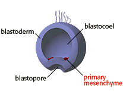
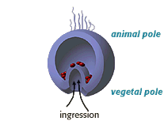
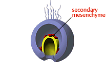
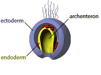

Developmental Mechanisms Problem Set
Problem 3 Tutorial: Transition to a 2- or 3-layered embryo
| At what stage of animal development do cells first move from the surface of the embryo into the interior, resulting in a two- or three-layered embryo? |
| When gastrulation begins, the cells at the blastula's vegetal pole move into the blastocoel, forming the blastopore. Mesenchyme cells can be seen gathering near the developing blastopore. |  |
| The blastopore deepens, forming a new cavity called the archenteron. This migration of cells into the bastocoel is referred to as ingression or "walking in" in Latin. |  |
| A second group of mesenchyme cells aggregate at the top of the archenteron. These cells will later connect with the animal pole of the embryo. |  |
| The cells migrating into the blastocoel become the endoderm layer (yellow). Cells on the outside of the embryo become the ectoderm layer (blue). The mesenchyme cells will eventually join to form a third layer, the mesoderm. |  |


Contact the Development Team
http://www.biology.arizona.edu
All contents copyright © 1996. All rights reserved.